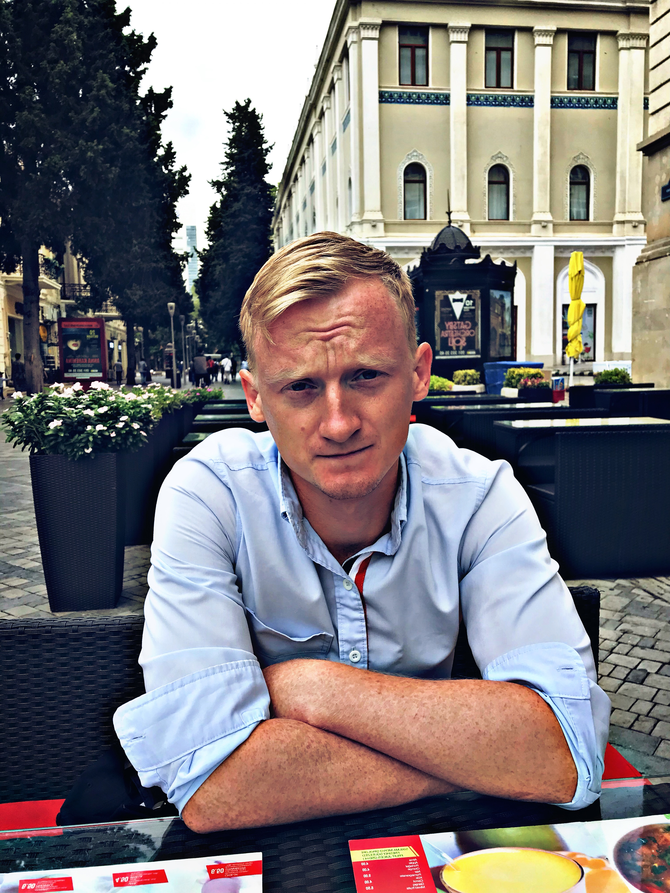

OBJECTIVE
Obtain employment in the field software development,
that will allow me to use my ability to work with people
and take advantage of my knowledge of QA.
SKILLS
- SDLC
- Mantis/ JIRA/Microsoft Azure
- Basic knowledge C#
- .html/CSS
- SQL/MySQL
- familiar with Git
WORK EXPIRIENCE
- Laboratory assistant of paint and varnish department in "Fomalgaut-Polimin" Ltd. The responsibilities included: incoming control of raw materials, maintenance of laboratory journals, quality control of products, work with regulatory documents,correction and calculation of compositions.
- Administrator of "Kobzov" circus. The responsibilities included: monitoring the performance of staff duties, keeping a time sheet, resolving conflict situations with visitors and staff, etc. Performing duties of administrator of the “Leipzig” Cinema. The responsibilities included: control, organization of work and preventive conversations with the personnel, settlement of conflict situations with visitors, control over planning and updating of repertoire, etc.
HOBBY
- I love outdoor activities, cooking, playing volleyball.